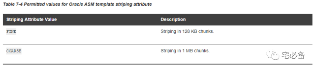
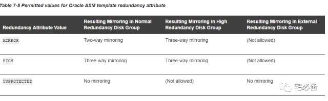
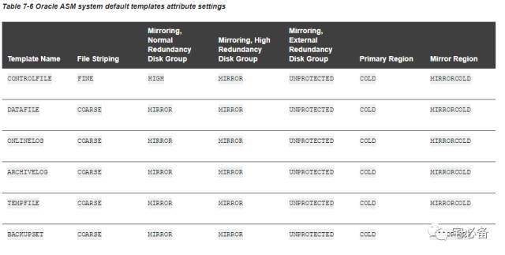
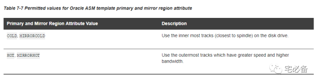
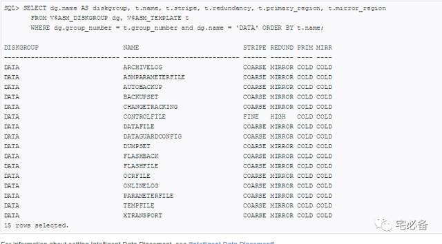

管理磁盘组模板
原创 2017-11-14 Oracle 宅必备
这个专题讲ASM相关的内容
这节讲ASM磁盘组模板
前面说过每种ASM文件类型都有其默认的模板，包括文件的冗余级别和条带化参数
1.模板属性值

7-4 为条带化的属性值，具体意义参见前面的文章

7-5 为冗余属性的值和磁盘组冗余级别的对应关系，有MIRROR,HIGH,UNPROTECTED三种
从上图我们可以看到在Normal的磁盘组中我们也可以用High属性值来做到三路镜像
2.默认模板属性值

7-6为ASM文件类型的默认属性值
以控制文件为例，上图表示当在Normal磁盘组中其默认为High值，然后对比7-5的图可以看到提供三路镜像

我们可以通过V$ASM_TEMPLATE视图来查看模板的具体属性
SQL> SELECT dg.name AS diskgroup, t.name, t.stripe, t.redundancy, t.primary_region, t.mirror_region FROM V$ASM_DISKGROUP dg, V$ASM_TEMPLATE t WHERE dg.group_number = t.group_number and dg.name = 'DATA' ORDER BY t.name;

3.增加新的模板到磁盘组
3.1新模板的默认值
新建的自定义模板并不是默认的模板名，我们需要在新建文件时使用add template手动指定自定义模板名
我们无法修改已存在的文件的模板
新建一个名为reliable的模板，属性为high级别，并将他添加到data磁盘组
ALTER DISKGROUP data ADD TEMPLATE reliable ATTRIBUTES (HIGH FINE);
新建一个UNPROTECTED属性的模板，并将其添加到data磁盘组
ALTER DISKGROUP data ADD TEMPLATE unreliable ATTRIBUTES (UNPROTECTED);
4.修改磁盘组模板
我们可以修改系统默认模板也可以修改我们自定义的模板
注意：只有新建的文件才能应用新的属性值，已存在的会继续沿用以前的
ALTER DISKGROUP data MODIFY TEMPLATE reliable
ATTRIBUTES (COARSE);
5.删除磁盘组模板
注意：你不能删除系统默认模板
删除磁盘组data中的unreliable模板
ALTER DISKGROUP data DROP TEMPLATE unreliable;
6.为新建的表空间指定自定义的模板
mytemplate模板需事先定义好
ALTER SYSTEM SET DB_CREATE_FILE_DEST = '+data(mytemplate)';
CREATE TABLESPACE mytblspace;
具体请参考下面链接:
https://docs.oracle.com/cd/E11882_01/server.112/e18951/asmfiles.htm#OSTMG139